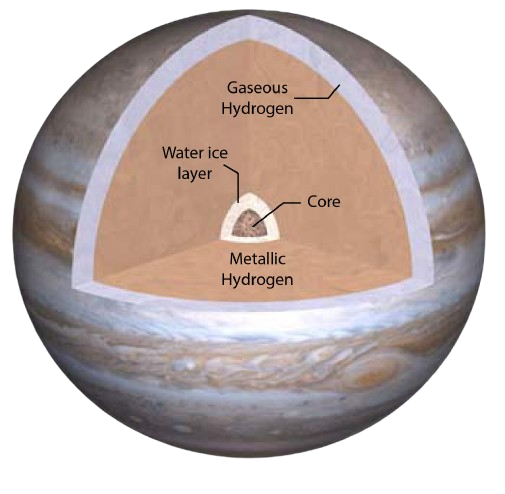

Jupiter is the largest planet in our solar system, a massive gas giant known for its colorful, swirling clouds and the iconic Great Red Spot, a giant storm larger than Earth that has raged for centuries. Composed mostly of hydrogen and helium, Jupiter has no solid surface, and its atmosphere is marked by intense storms and fast-moving winds. With a powerful magnetic field, it emits more heat than it receives from the Sun, indicating it has a hot, dense core. Jupiter has 79 known moons, including Ganymede, the largest moon in the solar system, and Europa, which may harbor a subsurface ocean with potential for life. The planet’s immense size, magnetic field, and dynamic atmosphere make it a fascinating subject for astronomers and a key to understanding gas giants beyond our solar system.

SOME INTRESTING FACTS ABOUT JUPITER
Biggest Planet:Jupiter is so large it could fit over 1,300 Earths inside it!Great Red Spot:This giant storm has been raging for at least 350 years and is bigger
than Earth.Fastest Spinner:Jupiter has the shortest day in the solar system, rotating once every
10 hours.Ring System:Like Saturn, Jupiter has faint rings, though they’re hard to see.79 Moons:Jupiter has 79 known moons, including Io, which has active volcanoes, and Europa
which may have an ocean under its ice.Powerful Radiation:Radiation near Jupiter is so intense it could harm unshielded spacecraft.
Jupiter Hidden Wonders and Bizarre Phenomena
Shrinking Great Red Spot:The iconic storm is shrinking, and scientists don’t know why.Invisible Lightning:Jupiter’s lightning can’t always be seen, as it emits X-rays instead of visible light.Europa’s Ocean:Jupiter’s moon Europa might have an underground ocean, but how it stays liquid is a mystery.Powerful Auroras:Jupiter’s auroras are incredibly strong, some fueled by its moons.Ammonia Snow:Ammonia snowstorms occur on Jupiter, but how they form is not well understood.Unknown Core:Jupiter’s core composition is still uncertain—whether it’s solid, liquid, or a mix.